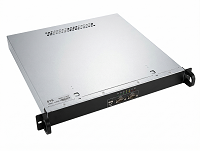

Компактное
размещение
Корпус высотой 1U занимает минимум места в стандартной 19″ стойке.
Компактная система записи в корпусе 1U для проектов, где не требуется большое количество каналов. Phantom MICRO устанавливается в 19″ стойку, поддерживает сетевой и локальный доступ и позволяет построить небольшую систему регистрации без сервера большей ёмкости.

Официальное изображение продукта МДИС
Phantom MICRO рассчитан на организации и отдельные узлы связи, где требуется записывать сравнительно небольшое количество каналов и важно экономно использовать место в телекоммуникационной стойке.
Корпус высотой 1U занимает минимум места в стандартной 19″ стойке.
Модель ориентирована на конфигурации, где не требуется ёмкость Phantom Pro или других многоплатных серверов.
Система поддерживает доступ по сети и/или локальное управление – в зависимости от выбранной схемы эксплуатации.
Текущая карточка продукта подтверждает два варианта записи. Максимумы разных типов каналов нельзя складывать без подтверждённой конфигурации.
Опубликованная карточка Phantom MICRO указывает конфигурацию записи до 8 аналоговых линий.
Для IP-записи на текущей карточке МДИС указано до 20 каналов.
Окончательная конфигурация зависит от способа подключения, версии ПО и используемой телефонной инфраструктуры.
В Phantom MICRO предусмотрен один слот PCI-E и установка не более одной платы Phantom. Это компактная система для небольших задач, а не платформа для максимального количества физических интерфейсов.
В опубликованной спецификации указана плата PHANTOM Dispatcher для подключения к сигнальным линиям. Конкретный тип интерфейсной платы и схема подключения определяются задачей проекта; включение платы в каждую поставку не предполагается автоматически.
Три функциональных уровня без обязательного отдельного сервера БД, центрального сервера или облака.
Аналоговые линии или IP-телефония в поддерживаемой конфигурации.
Компактная компьютерная платформа формирует записи переговоров и обеспечивает работу ПО «Фантом».
Пользователь работает с системой локально или по сети в соответствии с конфигурацией и предоставленными правами.
Ниже приведены характеристики текущей карточки МДИС. Конкретные модели комплектующих могут меняться в составе поставки; окончательную спецификацию необходимо подтверждать при заказе.
На текущей карточке Phantom MICRO опубликованы два варианта программной платформы: Windows 10 Pro Rus с MS SQL и Astra Linux с PostgreSQL.
База данных MS SQL
База данных PostgreSQL
Раздел поддержки МДИС указывает Phantom 4.10 как актуальную Windows-ветку, Phantom 5.x – как ветку для Astra Linux. Совместимые версии ПО, ОС и оборудования согласовываются для конкретной конфигурации. Это альтернативные варианты, не две одновременно установленные ОС.
Опубликованное описание Phantom MICRO предусматривает доступ по сети и/или под локальным управлением. Это позволяет использовать устройство как самостоятельный узел записи или работать с ним удалённо в пределах предусмотренной проектом сетевой архитектуры.
Сценарии подбираются по типу линий, количеству каналов и условиям размещения.
Запись нескольких телефонных линий без необходимости устанавливать сервер Phantom Pro большей ёмкости.
Локальная точка записи в составе более крупной инфраструктуры, если проект допускает такую архитектуру.
Корпус 1U подходит для площадок, где важна плотность размещения оборудования.
Выбор определяется не только количеством каналов, но и типами линий и требованиями проекта.
До 8 аналоговых линий или до 20 IP-каналов, одна плата, корпус 1U.
Корпус MidiTower, до 3 плат «Фантом» – другая компьютерная конфигурация для малоканальных систем.
Подробнее о PC 2Промышленные многоплатные серверы для большего числа подключаемых линий.
Подробнее о ProМЦКРС «Фантом» внесён в реестр российской промышленной продукции Минпромторга. Реестровый номер – 10838442. Дата внесения – 21 мая 2026 года. Опубликованный срок действия заключения – до 20 мая 2029 года.
Реестровая запись относится к МЦКРС «Фантом»; применимость к конкретной поставке Phantom MICRO следует подтверждать по её спецификации.
Для подбора конфигурации нужны тип телефонных линий, количество одновременно записываемых каналов, используемая АТС или IP-телефония и требования к размещению оборудования. Инженеры МДИС помогут определить, подходит ли Phantom MICRO или для проекта нужна система большей ёмкости.